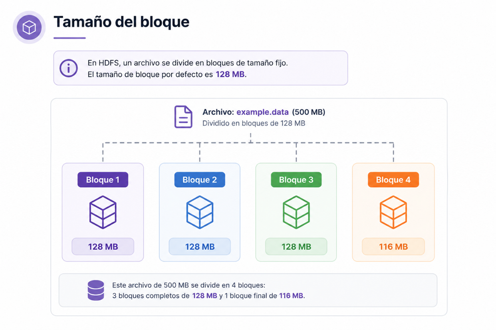
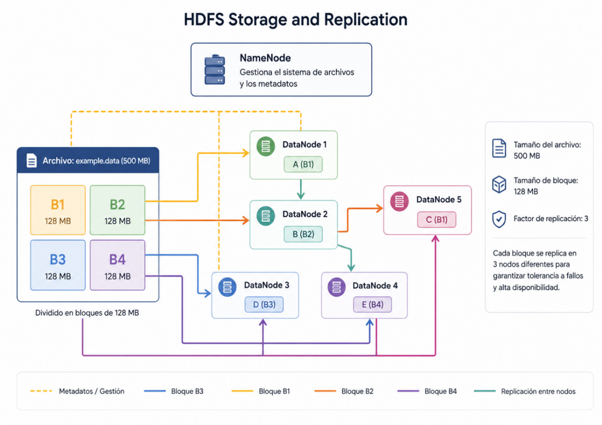
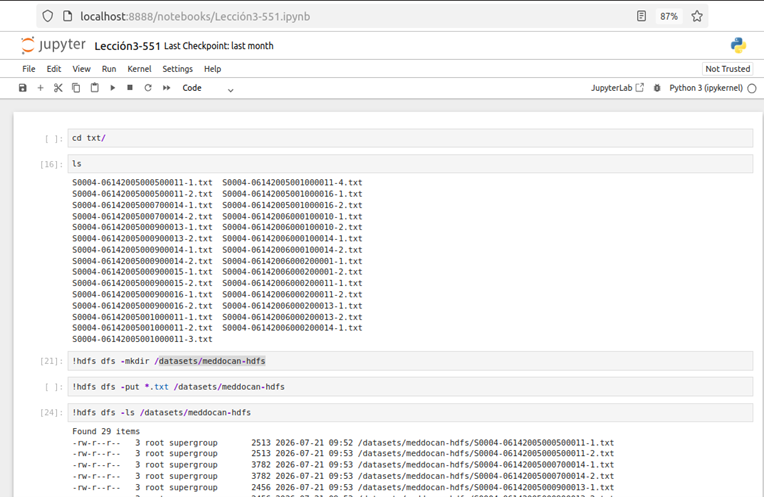
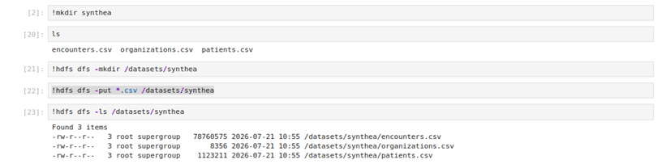

Capítulo 2. Ecosistema de Hadoop
Trabajo Fin de Grado - Arturo Cabello Rodríguez
Trabajo Fin de Grado - Arturo Cabello Rodríguez
El Hadoop Distributed File System (HDFS) es el sistema de archivos distribuido de Apache Hadoop. Está diseñado para almacenar grandes volúmenes de datos de forma fiable y proporcionar un acceso de alto rendimiento mediante una arquitectura distribuida basada en múltiples nodos.
HDFS es un sistema de archivos distribuido desarrollado en Java que permite almacenar datos de forma redundante sobre un conjunto de servidores que forman un clúster Hadoop.
Su diseño está orientado a hardware convencional (commodity hardware), donde los fallos de los equipos son habituales. Gracias a la replicación automática de los bloques de datos, el sistema puede seguir funcionando incluso cuando uno o varios servidores dejan de estar disponibles.

División de un archivo en bloques distribuidos dentro de HDFS.
Cuando un archivo se almacena en HDFS, éste se divide automáticamente en bloques de tamaño fijo. El tamaño predeterminado de cada bloque es de 128 MB, aunque puede modificarse según las necesidades de la infraestructura.
Un archivo de 500 MB se dividiría en:
El espacio restante no utilizado se reutiliza posteriormente por el sistema de archivos.
Cada bloque almacenado en HDFS se replica automáticamente, normalmente tres veces, distribuyendo las copias entre diferentes DataNodes del clúster.

Replicación automática de bloques en HDFS.
Los archivos se dividen en bloques que son distribuidos entre distintos nodos del clúster.
La capacidad aumenta simplemente añadiendo nuevos servidores al clúster.
Cada bloque dispone de varias copias distribuidas entre diferentes nodos.
El sistema continúa funcionando incluso cuando fallan algunos servidores.
Especialmente diseñado para almacenar grandes conjuntos de datos.
Optimizado para lecturas y escrituras secuenciales de grandes volúmenes de datos.
Las aplicaciones se ejecutan cerca de donde se encuentran almacenados los datos.
El NameNode administra el sistema de archivos mientras que los DataNodes almacenan los bloques de datos.
HDFS sigue una arquitectura maestro-esclavo compuesta por dos tipos de nodos.
| Característica | Descripción |
|---|---|
| Bloques | 128 MB por defecto. |
| Replicación | 3 copias por defecto. |
| Escalabilidad | Añadiendo nuevos nodos. |
| Arquitectura | NameNode + DataNodes. |
| Disponibilidad | Alta tolerancia a fallos. |
En esta lección se propone un ejercicio práctico cuyo objetivo es familiarizar al estudiante con las operaciones básicas del sistema de archivos distribuido HDFS. Para ello, se utilizarán los comandos fundamentales de Hadoop que permiten crear directorios, copiar archivos, consultar su contenido y gestionar la información almacenada en el clúster.
El ejercicio se plantea de forma progresiva, comenzando con la preparación de los archivos en el sistema de archivos local y continuando con su incorporación al sistema distribuido HDFS. Posteriormente, se verificará que los datos se han almacenado correctamente y se realizarán diferentes operaciones de consulta sobre ellos.
El estudiante aprenderá a utilizar los principales comandos de HDFS para crear directorios, cargar archivos desde el sistema local, consultar su contenido y comprobar el espacio ocupado por los datos dentro del clúster Hadoop.
La resolución del ejercicio se realiza mediante Jupyter Notebook, utilizando la terminal integrada en el entorno Hadoop. Desde ella se ejecutan los comandos necesarios para preparar los directorios locales, crear las estructuras correspondientes en HDFS y transferir los archivos al sistema distribuido.
En primer lugar, se accede al directorio local donde se encuentran almacenados los documentos del corpus MEDDOCAN. Posteriormente, se crea el directorio correspondiente en HDFS y se utilizan los comandos de Hadoop para copiar los archivos.
Una vez disponibles los archivos .txt en el directorio local, se crea el directorio de destino en HDFS mediante el comando:
!hdfs dfs -mkdir /datasets/meddocan-hdfsA continuación, se copian los archivos de texto desde el sistema de archivos local al directorio creado en HDFS:
!hdfs dfs -put *.txt /datasets/meddocan-hdfsFinalmente, se comprueba que los archivos han sido incorporados correctamente mediante el listado del directorio:
!hdfs dfs -ls /datasets/meddocan-hdfs
Figura. Carga y verificación de los archivos del corpus MEDDOCAN en HDFS mediante Jupyter Notebook.
La ejecución mostrada permite comprobar que los archivos .txt han sido incorporados correctamente al directorio /datasets/meddocan-hdfs de HDFS. El comando hdfs dfs -ls permite consultar los archivos almacenados y verificar sus propiedades básicas, como permisos, propietario, tamaño y fecha de modificación.
Una vez completada la carga de los documentos MEDDOCAN, el ejercicio continúa con la incorporación de datos procedentes del conjunto de datos sintético Synthea.
Para esta práctica se utilizarán tres archivos CSV:
Los archivos se sitúan inicialmente en el directorio local destinado a los datos de Synthea. Posteriormente, se crea en HDFS el directorio:
/datasets/SyntheaFinalmente, los archivos CSV se copian desde el sistema local al directorio de HDFS para que puedan ser utilizados posteriormente en las diferentes prácticas de procesamiento y análisis.

Figura. Carga de los archivos CSV de Synthea y verificación de su almacenamiento en HDFS mediante Jupyter Notebook.
Mediante este ejercicio, el estudiante ha realizado el ciclo básico de incorporación de información al sistema de archivos distribuido Hadoop: preparación de los datos en el sistema local, creación de directorios en HDFS, transferencia de archivos y comprobación de su almacenamiento.
Este procedimiento constituye una operación fundamental dentro de cualquier infraestructura Big Data, ya que HDFS actúa como sistema de almacenamiento sobre el que posteriormente pueden ejecutarse procesos de análisis y transformación mediante tecnologías como MapReduce y Hadoop Streaming.
HDFS constituye el núcleo del almacenamiento distribuido de Apache Hadoop. Su capacidad para dividir los archivos en bloques, replicar automáticamente la información y distribuir los datos entre múltiples nodos permite construir sistemas Big Data altamente escalables, fiables y preparados para trabajar con volúmenes masivos de información.